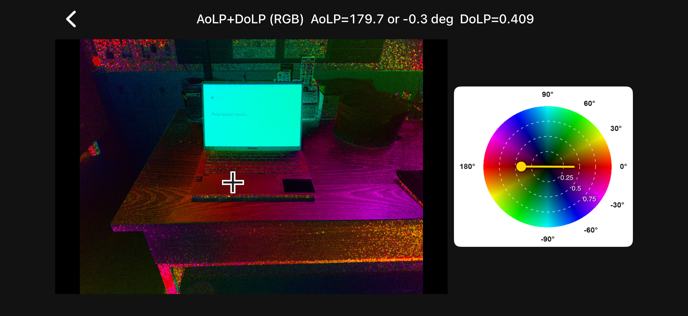

Chapter contents
User manual
Read the results
Results and data
9. Read the result
| View | How to read it |
|---|---|
| AoLP+DoLP | Hue shows the polarization angle. Brightness shows the degree of linear polarization. |
| DoLP | Degree of linear polarization. Black is 0 and white is 1. |
| AoLP | Angle of linear polarization. Match the hue to the legend. The app reports angles from 0° to less than 180°, measured from the Photo 1 orientation toward Photo 2. Black marks an undefined angle. |
Select RGB for the combined result or R, G, or B for one colour channel. The combined result averages the three channels' linear Stokes values before calculating DoLP and AoLP.
Every image view supports touch zoom and tapping, including AoLP+DoLP, DoLP, AoLP and the RGB, R, G and B channels. Pinch to zoom, drag to move around, and tap 1× when visible to reset the view. Tap the result image to open it full screen, then tap a point to read its values and see its position on the legend. Angles that differ by 180° describe the same polarization direction. Treat the angle cautiously where DoLP is very low.
Open Tap for details to see the alignment status and any exposure warnings. If you used partial alignment, magenta areas have no usable measurement.
Example 1. Read the result screen
Compare the laptop and table scene across display modes and colour channels (Fig. 23). The main view is AoLP+DoLP (RGB): hue encodes linear-polarization angle and brightness encodes linear-polarization degree. These are not the objects’ original colours.

Use the lower-left buttons for RGB, R, G or B, and the lower-right buttons for AoLP+DoLP, DoLP or AoLP. Aligned | Perspective describes this result’s alignment state; it does not guarantee that every pixel is free of error. Export is at the top.
Open Tap for details to inspect low-signal, overexposure or other warnings for that measurement. This example shows Low-signal areas only; every warning does not appear on every capture. Coloured speckles in dark areas should not be treated as reliable polarization detail.
Example 2. Read angle and degree at a point
Tap the result to open the full-screen reading view, then tap a location. The cross and the numbers at the top refer to the same sampled point (Fig. 24). Here the cross is on the laptop palm rest, not the LCD.


179.7° and −0.3° differ by 180° and describe the same linear-polarization axis. The yellow marker’s direction on the wheel indicates AoLP; its radius indicates DoLP. The centre is 0 and the rim is 1. A DoLP of 0.409 is about 40.9% at this point; it does not describe the entire palm rest or display.
Zoom before selecting a point
Pinch to zoom and drag to pan in the full-screen view, then tap a detail. When 1× appears at the upper right, tap it to reset the view (Fig. 25). Touch navigation is available in AoLP+DoLP, DoLP and AoLP, and in RGB, R, G and B.

Example 3. Read the DoLP view
Black means DoLP = 0 and white means DoLP = 1. The grayscale represents linear-polarization degree, not ordinary photographic brightness. Tap a location, read its value at the top and find the yellow marker on the grayscale bar (Fig. 26).

The display is brighter in this DoLP map, while the palm rest and table have other grayscale levels. Sample each region and inspect quality warnings before comparing values. False colour or brightness alone does not establish reliability.